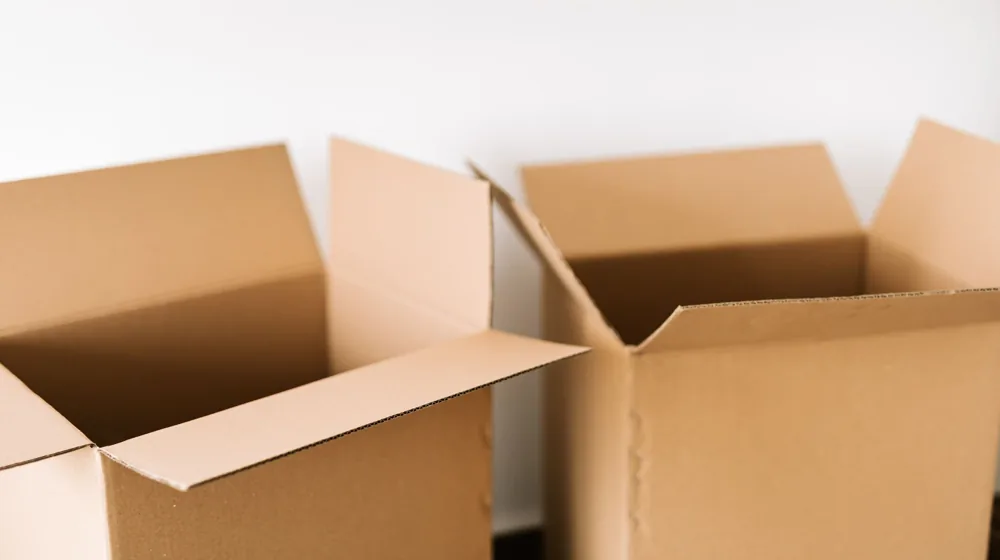

이사 전 체크리스트 3단계: 버릴 것과 챙길 것 완벽 정리
사진: RDNE Stock project / Pexels (무료 이미지, 출처 표기)
이사 준비, 무엇부터 버리고 챙겨야 할까?

새로운 시작을 앞두고 이사를 준비 중이신가요? 막상 포장을 시작하면 어떤 물건을 가져가고 무엇을 처분해야 할지 막막해지기 마련입니다. 이삿짐의 부피를 줄이는 것은 이사 비용을 직접적으로 아끼는 가장 확실한 방법입니다. 지금부터 이삿날 당황하지 않도록 버릴 것과 챙길 것, 그리고 놓치기 쉬운 행정 절차까지 3단계로 나누어 깔끔하게 정리해 드립니다.
1단계: 과감하게 버릴 것 분류하기 (비용 절약의 핵심)
이사 견적은 짐의 부피(톤수)에 따라 결정됩니다. 지난 1년간 한 번도 쓰지 않은 물건은 새 집에서도 쓰지 않을 확률이 높으므로 과감히 정리하는 것이 좋습니다. 특히 가구와 가전은 이사 전에 처분법을 결정해야 합니다.
- 대형 폐기물 처리: 가구나 가전제품은 그냥 버릴 수 없습니다. 주민센터를 방문하거나 지자체 구청 홈페이지, 또는 민간 수거 앱(예: 빼기, 여기로 등)을 통해 미리 신고하고 스티커를 부착해 배출해야 합니다.
- 폐가전 무상배출예약시스템: 냉장고, 세탁기, 에어컨 등 대형 가전은 정부에서 운영하는 무상배출 예약시스템(콜센터 1599-0903)을 이용하면 별도 수수료 없이 무상으로 수거해 갑니다.
- 안 쓰는 헌 옷과 책: 헌 옷 수거 업체에 연락해 무상 또는 소액을 받고 기부하거나 처분할 수 있습니다. 상태가 양호한 책은 중고 서점에 판매하는 것도 좋은 방법입니다.
2단계: 따로 보근하며 꼭 챙길 것 (귀중품과 필수 서류)
포장이사 업체를 이용하더라도 모든 물건을 이삿짐 트럭에 맡겨서는 안 됩니다. 분실 시 보상이 어렵거나 당장 이삿날 당일에 필요한 물건들은 따로 챙겨서 개인 차량이나 가방에 직접 보관해야 안전합니다.
- 귀중품 및 현금: 귀금속, 고가의 전자기기, 현금, 예금통장, 인감도장 등은 반드시 개인 가방에 넣어 직접 운반합니다.
- 부동산 계약서 및 신분증: 전입신고 및 확정일자 신청, 이사 당일 잔금 치르기 등에 필요한 신분증과 임대차 계약서는 절대 이삿짐 박스에 넣지 마세요.
- 기본 생필품 세트: 이사 당일 밤에 바로 사용할 수 있는 멀티탭, 세면도구, 수건, 충전기, 쓰레기봉투(이사 갈 지역의 규격 봉투)는 따로 한 상자에 담아두면 첫날 유용하게 씁니다.
3단계: 이사 일정별 실전 체크리스트
이사를 앞두고 날짜별로 챙겨야 할 업무를 표로 정리했습니다. 미리 알람을 맞춰두고 하나씩 지워나가면 준비가 훨씬 수월해집니다.
2026년 기준 우체국의 주거이전 우편물 전송 서비스는 정부24 홈페이지나 우체국 창구에서 간편하게 신청할 수 있습니다. 이사 후 3개월간 이전 주소로 오는 우편물을 새 주소로 무료(또는 일부 수수료 발생) 배송해주므로 반드시 신청하시기 바랍니다.
놓치기 쉬운 이사 당일 필수 행정 절차
이사 당일 잔금을 치르는 과정에서 자칫 놓치면 손해를 보거나 나중에 번거로워지는 행정 절차가 있습니다. 다음 두 가지는 잊지 말고 꼭 확인하세요.
1. 장기수선충당금 돌려받기: 아파트나 오피스텔 같은 공동주택에 전월세로 거주했다면, 매월 관리비에 포함되어 납부했던 '장기수선충당금'을 돌려받아야 합니다. 원래 집주인이 내야 하는 돈을 세입자가 대신 낸 것이므로, 이사 당일 관리사무소에서 납부확인서를 발급받아 임대인(집주인)에게 청구하여 환급받으시면 됩니다.
2. 공과금 일할 정산: 전기요금(한국전력공사 123), 수도요금(관할 상수도사업본부), 도시가스 요금은 이사 당일 아침에 계량기 숫자를 사진으로 찍어 각 고객센터에 전화하면 당일까지의 사용 금액을 정확히 정산해 줍니다. 아파트의 경우 관리사무소에서 한 번에 정산해 주기도 하므로 관리사무소에 먼저 문의하는 것이 좋습니다.
더불어 이사 가실 지역의 주민센터를 방문하거나 정부24를 통해 이사 후 14일 이내에 전입신고를 마쳐야 대항력을 유지할 수 있다는 점도 꼭 기억하세요.
🔗 이 글도 함께 보면 좋아요: 암보험 가입 전 '이것' 모르면 손해봅니다! 필수 체크리스트 4가지
관련 추천 상품
이 포스팅은 쿠팡 파트너스 활동의 일환으로, 이에 따른 일정액의 수수료를 제공받습니다.
한눈에 보는 상품 목록
이사용 의류 이불 압축팩
부피가 큰 이불과 옷가지의 부피를 70% 이상 줄여주어 이사 차량 톤수를 줄이는 데 도움을 주는 필수 아이템입니다.
대형 이사 박스 타포린백
튼튼하고 내구성이 뛰어나 무거운 짐을 안전하게 옮길 수 있으며 보관 시에도 유용한 이사용 다용도 가방입니다.